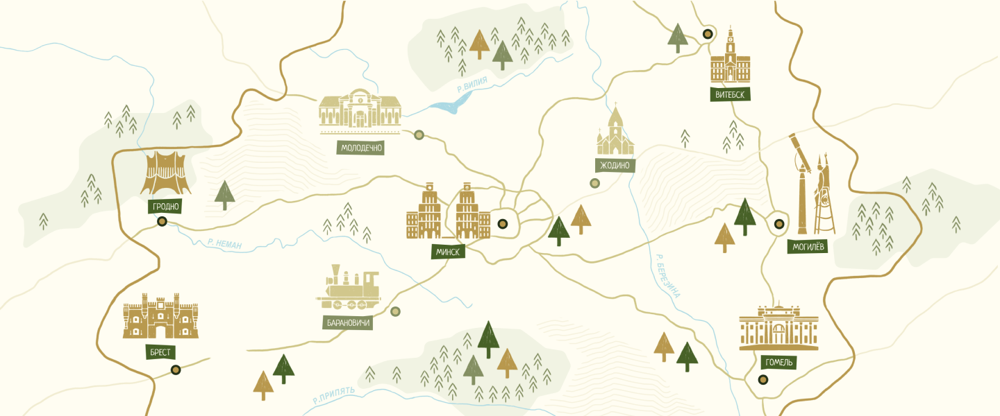

ЖУКОВКА
ЮХНОВКА
Территория, VOLKI
Мы отметили на карте места, где природа подчиняется вашему отдыху. Юхновка и Жуковка — это не просто локации, а границы вашего личного пространства и комфорта. Выбирайте свою зону влияния.

Юхновка
16 км от Минска
Фундамент философии VOLKI. Наш первый концептуальный комплекс с глубоким погружением в банную культуру, особыми программами парения и премиальным сервисом. Закрытая территория комфорта для истинных ценителей.
4 бани
До 40 человек
500 кв м

Жуковка
16 км от Минска
Фундамент философии VOLKI. Наш первый концептуальный комплекс с глубоким погружением в банную культуру, особыми программами парения и премиальным сервисом. Закрытая территория комфорта для истинных ценителей.
4 бани
До 40 человек
500 кв м